乍一走进这些地铁站，你会误以为自己进入了皇宫或博物馆，繁复华丽的装饰、考究的细节，它们穿越了时代，兀自地美着，完全不 care 现代社会发生着什么。但习惯了在莫斯科生活的人，可能很少留心这些细节。
以下便是他的部分作品，可以来好好欣赏一下。
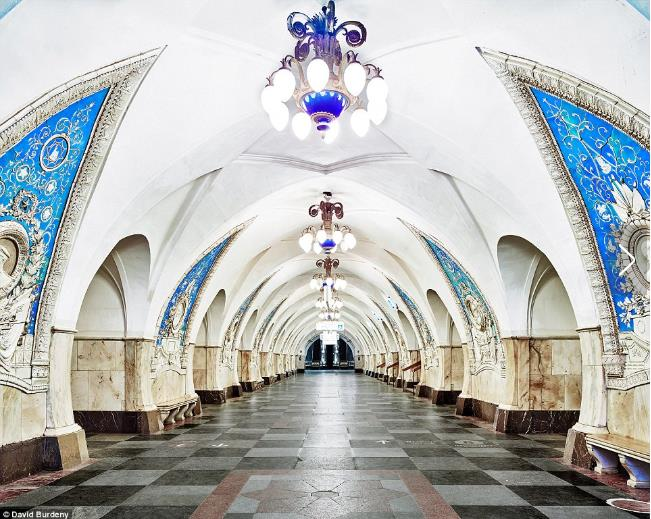
▲Taganskaya站，是Koltsevaya线的中心站点，1950年1月1日开始运行，以蓝白色为主调。
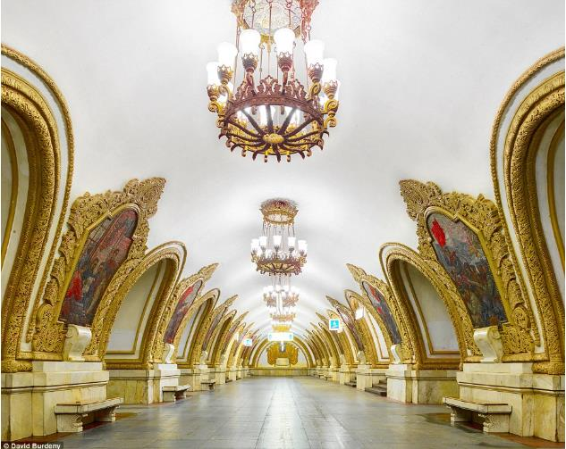
▲东部金色的Kiyevsskaya站，看上去就像一个艺术长廊或是宫殿，两边挂着华丽边框包裹着的巨幅油画。
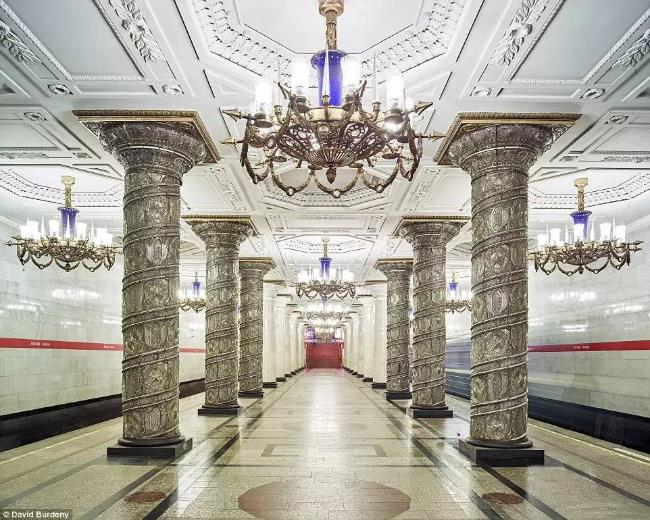
▲Avoto站，看起来非常富丽堂皇，有花纹繁复的巨型柱子，独特的照明设备和布满图案的地板。
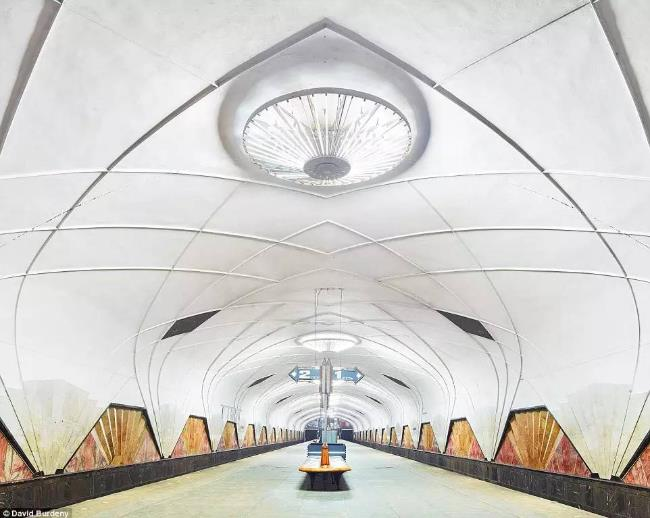
▲机场地铁站，则像一座现代艺术博物馆，弯弯曲曲，丰富多彩，且看不到任何垃圾。
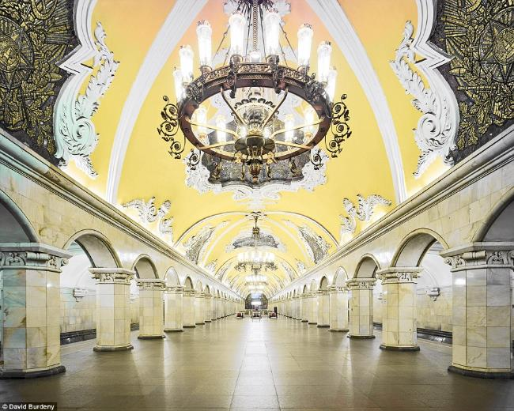
▲Komsomolskaya地铁站的重点装饰在于天花板上。这个地铁站名很来头，是“共青团”的意思。
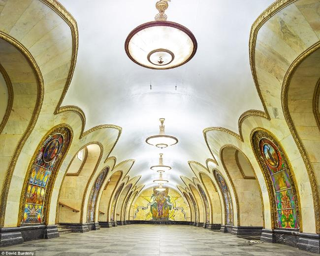
▲Novolobodskaya地铁站的墙壁上是模仿教堂的彩绘玻璃窗，这看起来更像是走在城堡里。
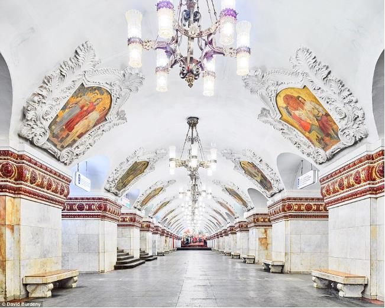
▲忘记肮脏的长凳吧，雪白的Kiyevsskaya站里全是大理石座椅，还有很多艺术画相衬。
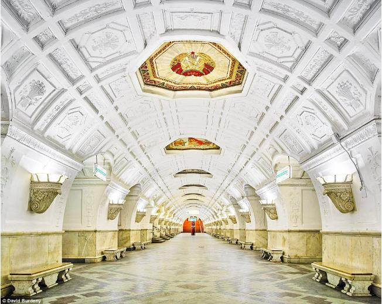
▲选择白色油漆的地铁站是一个勇敢的决定，但白俄罗斯站站状况良好，闪闪发光。
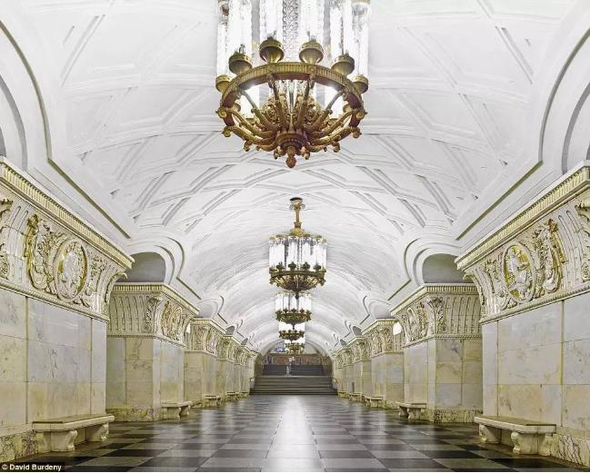
▲一尘不染的Prospekt Mira站，是一个绝佳避风港，有着华丽的吊灯和柱子。
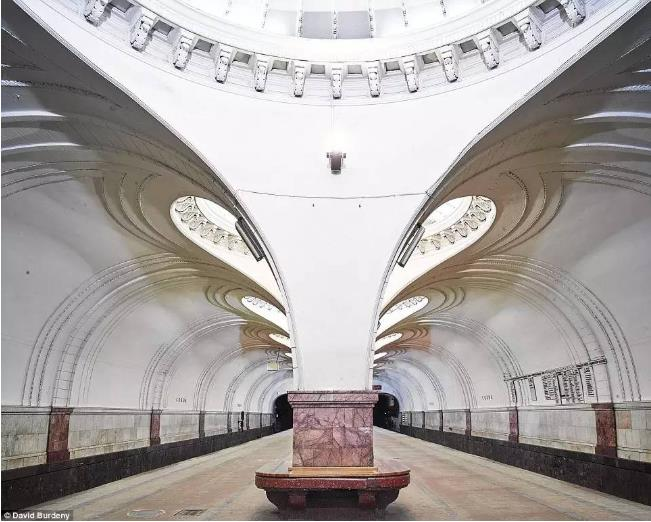
▲Sokol地铁站，虽然已有80岁高龄，但又充满强烈的科幻感，墙壁上没有任何广告。
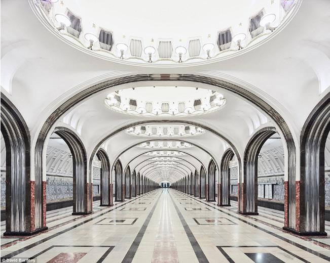
▲Mayakovskaya站，一条闪亮的大道。
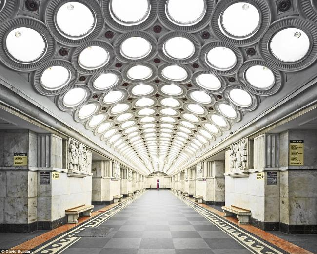▲Elektrozavodskaya站，复古风和未来主义的完美融合。
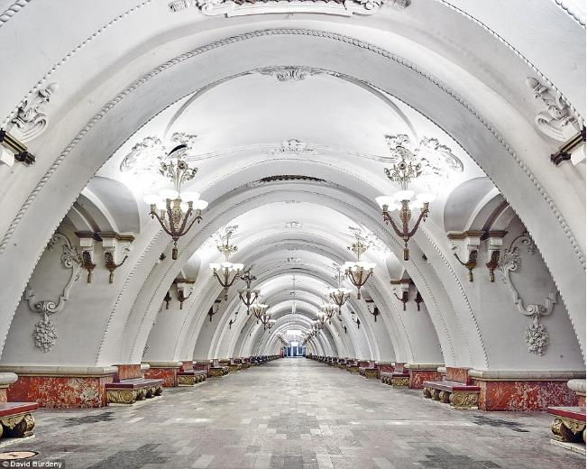
▲Arbatskaya站宽敞豪华，墙上的装饰又让人觉得亲切温馨。
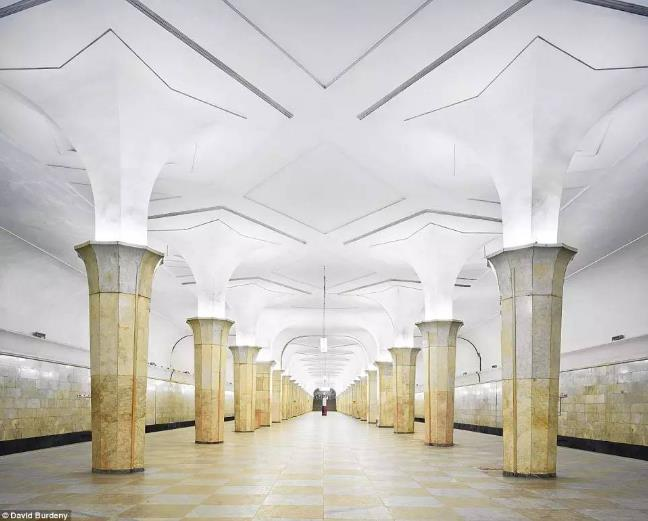
▲Kropotkinskaya站是简单而优雅，其实也很像一个个巨型的手电筒……
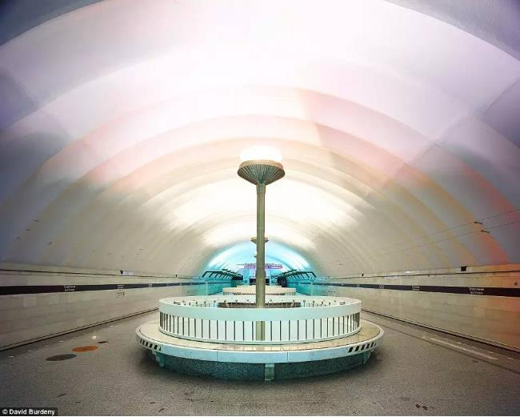
▲Sportivnaya站的墙壁上排列着柔和的彩虹色调，简直太梦幻。
拍摄这些照片并非易事，David Burdeny 一直试图打通官僚上的繁文缛节，但都没什么进展。后来他偶然认识了 Top Gear 的制片人，这个英国节目曾在莫斯科的地铁里拍摄取景。在这位制片人的帮助下，David Burdeny 得以用两周的时间去拍摄这些车站，每个车站的拍摄时间是一小时。他也成为第一位征得允许拍摄莫斯科停运状态地铁站的摄影师。
其实，莫斯科地铁是世界上规模最大的地铁系统之一，它还是世界上使用效率第二高的地下轨道系统（第一是纽约）。据悉，莫斯科地铁站每个工作日大约能接待900万人次。
地铁一期工程动工于 1935 年，当时苏联政府建造地铁是出于军事方面的考虑，地铁可供 400 余万居民掩蔽防护之用。斯大林曾经希望把莫斯科打造为无产阶级的新罗马，地铁也就成为了意识形态的宣传工具，因此设计得富丽堂皇。
如果你有机会来到莫斯科，那一定要来见识一下这些美到极致的地下艺术。